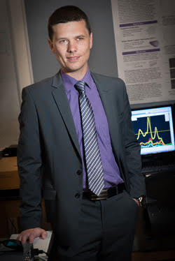

|
TCU Department of Physics and Astronomy Laboratory of Bio-Nanotechnology |

Phone: 817-257-7124
E-mail: a.naumov@tcu.edu
2800 S. University Dr.
Texas Christian University
Sid Richardson Bldg. # 305
Fort Worth, TX 76129
Dr. Anton Naumov
 Dr. Naumov received his B.S. in Physics from the University of Tennessee, Knoxville, where he started his nanotechnology research working on separation of chiral carbon nanotubes. He received his M.S. and Ph.D in Applied Physics from Rice University, where his research was focused on optical properties of carbon nanotubes and graphene. He worked at IBM and Honda Research Institute exploring optoelectronic applications of nanomaterials. After his Ph.D. Dr. Naumov joined Ensysce Biosciences Inc. as a Research Scientist and a complimentary Postdoctoral Fellow at Rice, working on the development of nanomaterials-assisted cancer therapeutics. Later on, he joined Central Connecticut State University as an Assistant Professor. In 2015 Dr. Naumov has joined TCU, where he continues his work in applied biophysics and nanotechnology.
Our lab’s work is focused on developing biological imaging, drug delivery and sensing applications of carbon nanotubes, graphene derivatives, quantum dots and gold nanoparticles. We target such conditions as cancer nonalcoholic steatohepatitis and bacterial infections. Additionally we explore optoelectronic applications of graphene-based materials including graphene oxide and graphene quantum dots, synthesize new nanomaterial and characterize their properties.